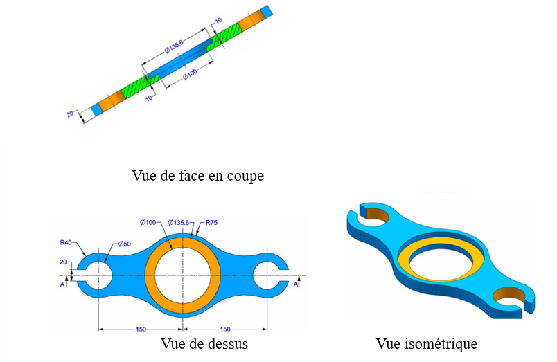
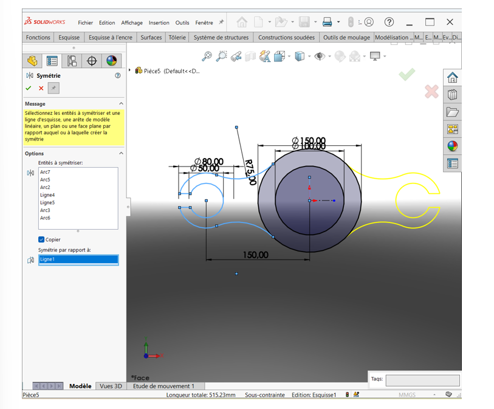
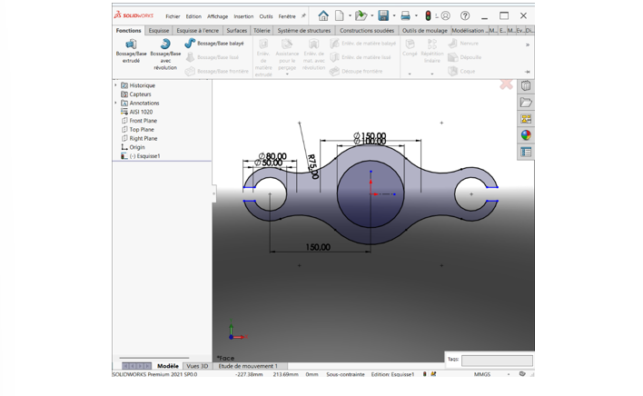
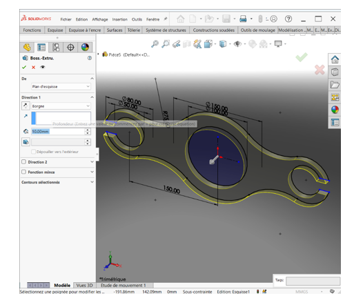
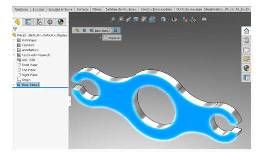
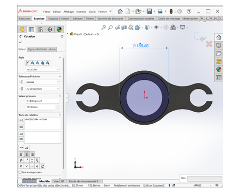
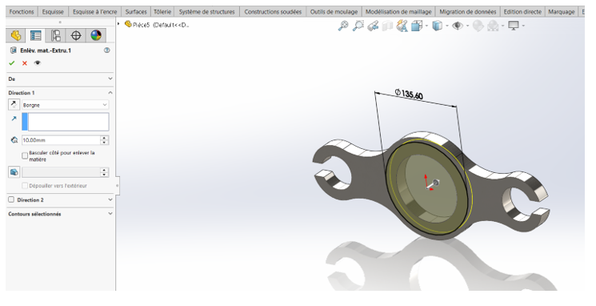
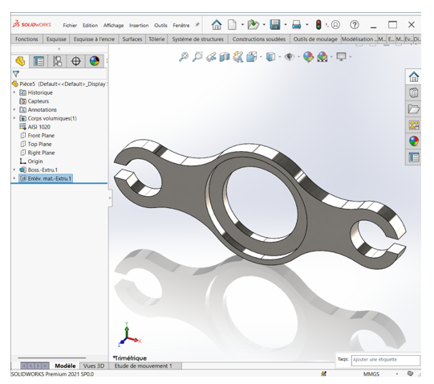

I. Première Pièce
1. Présentation générale de la pièce 1
Nom de la pièce : Pièce 1
Date de création : 07/06/2025
Échelle : 1/1
2. Caractéristiques techniques de la pièce 1
- Système d'unité : MMGS (millimètre, gramme, seconde).
- Décimale : 2 (toutes les dimensions doivent être exprimées avec deux chiffres après la virgule.)
- Tolérance : ± 5% (marge d'erreur).
- Matériaux et densité : Acier AISI 1020 ; Densité : 0,0079 g/mm³.
- Remarque générale : Tous les trous sont débouchants sauf indication contraire.
3. Représentation graphique de la pièce 1

4. Processus de réalisation de la pièce 1
1ère Étape : Configuration des paramètres initiaux du dessin (système d'unité et matériaux)
Configuration du système d'unité
Dans SolidWorks, regardez tout en bas à droite de l'interface. Vous verrez une zone qui affiche le système d'unité actuel (MMGS, IPS, etc.).
- Choisissez MMGS.
La configuration du système d'unité est maintenant définie.
Mise en place du matériau (Acier AISI 1020)
- Naviguez vers la pièce dans l'arbre de création, situé à gauche de l'interface.
- Faites un clic droit sur la pièce, puis sélectionnez "Matériau".
- Cliquez sur "Éditer le matériau".
- Dans la fenêtre qui s'ouvre, parcourez la liste des matériaux prédéfinis.
- Cliquez sur la flèche à côté de "Acier" pour dérouler la catégorie.
- Sélectionnez AISI 1020.
- Enfin, cliquez sur "Appliquer", puis sur "Fermer" pour valider le choix.
La configuration du matériau est terminée.
2ème Étape : Réaliser l'extrusion
Réalisation de l'esquisse à extruder
- Configuration du plan :
- Dans l'arbre de création à gauche, sélectionnez le "Plan de face".
- Cliquez ensuite sur l'icône "Esquisse" dans la barre d'outils (ou clic droit > "Esquisse").
- Le plan bascule automatiquement en vue normale (si ce n'est pas le cas, appuyez sur Ctrl + 8).
- Création des cercles principaux :
- Sélectionnez l'outil "Cercle" (icône dans la barre d'outils d'esquisse).
- Tracez un premier cercle en cliquant sur l'origine du repère pour définir son centre, puis en cliquant une deuxième fois pour définir son périmètre.
- Utilisez l'outil "Cote intelligente" pour définir son diamètre à 100 mm.
- Tracez un deuxième cercle de diamètre 50 mm, dont le centre est distant de 150 mm du premier cercle. Utilisez l'outil "Cote intelligente" pour définir la distance entre les centres.
- Pour aligner les centres horizontalement, sélectionnez les deux centres (Ctrl + clic), puis choisissez la relation "Horizontal" dans le menu à gauche.
- Ajout de cercles concentriques :
- Tracez un premier cercle de diamètre 150 mm concentrique au cercle de 100 mm de diamètre.
- Tracez un deuxième cercle de diamètre 80 mm concentrique au cercle de 50 mm de diamètre.
- Raccordement des grands cercles par un arc :
- Dans la barre d'outils Esquisse, cliquez sur "Arc" > "Arc de 3 points".
- Cliquez une première fois pour le point de départ de l'arc, un deuxième clic pour le point d'arrivée, et un troisième clic pour définir la courbure.
- Utilisez l'outil "Cote intelligente" pour définir le rayon de l'arc à 75 mm.
- Pour rendre l'arc tangent aux cercles : maintenez la touche Ctrl, cliquez sur le cercle et l'arc. Dans la liste du menu à gauche, choisissez "Tangente", puis cliquez sur OK.
- Création de l'ouverture sur les petits cercles :
- Utilisez l'outil "Ligne" pour délimiter les zones d'ouverture.
- Appliquez l'outil "Décalage des entités" : décalez de 10 mm de façon bidirectionnelle à partir des lignes tracées.
- Utilisez l'outil "Ajuster les entités" pour supprimer les segments superflus et obtenir la forme finale de l'ouverture.
- Symétrie des entités :
- Tracez une ligne de construction pour servir d'axe de symétrie (généralement l'axe X).
- Prenez la fonction "Symétrie des entités". Dans la case "Entités à symétriser", sélectionnez l'arc précédemment créé et les lignes de l'ouverture. Dans la case "Symétrie par rapport à", cliquez sur la ligne de construction.
- Validez pour créer les entités symétriques.

- Ajustement de l'arc pour extrusion unique :
Après validation, ajustez l'arc du grand cercle situé entre les deux arcs de raccordement. Cette étape est essentielle pour garantir que l'esquisse constitue une géométrie fermée et continue, permettant ainsi une extrusion en une seule opération. Lorsque l'esquisse contient des discontinuités, la fonction d'extrusion exige la sélection manuelle de chaque zone. Pour éviter cela, supprimez les segments superflus ou raccordez correctement les entités afin de former une seule surface exploitable.

Extrusion de l'esquisse
- Allez dans l'onglet Fonction, puis sélectionnez la commande "Base/Bossage extrudé".
- Sélectionnez l'esquisse précédemment ajustée.
- Dans le champ de profondeur, modifiez la valeur par défaut à 20 mm pour définir la hauteur de l'extrusion.
- Validez l'opération pour obtenir le volume extrudé.

Après la validation, vous obtenez le dessin ci-dessous :

3ème Étape : Enlèvement de la matière
- Sélectionnez la face supérieure de la pièce comme plan d'esquisse.
- Dessinez un cercle sur cette face, concentrique aux grands cercles.
- Cotez ce cercle avec un diamètre de 135.6 mm.
- Allez dans l'onglet Fonction, puis sélectionnez la commande "Enlèvement de matière extrudé".
- Appliquez cette fonction sur une profondeur de 10 mm.


Après validation, vous obtenez :

4ème Étape : Évaluation de la masse
- Allez dans l'onglet Évaluer dans la barre d'outils.
- Appuyez sur "Propriétés de masse".
Enfin, nous avons obtenu la masse de la Pièce 1, qui est de 2850,16 g.